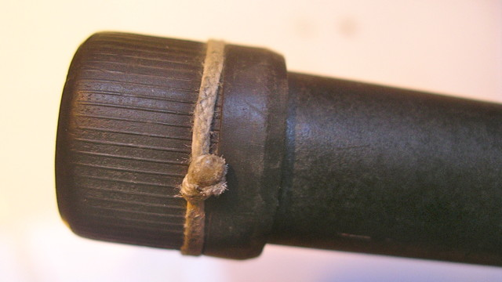
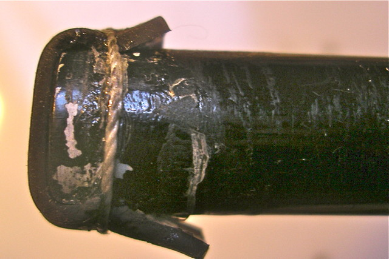
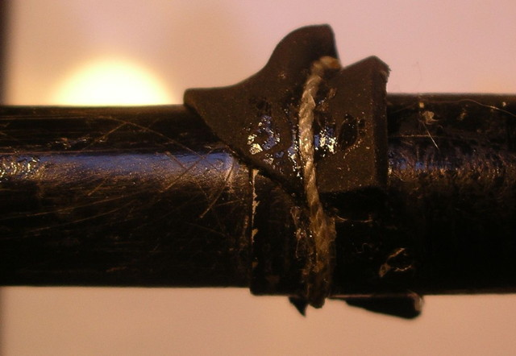
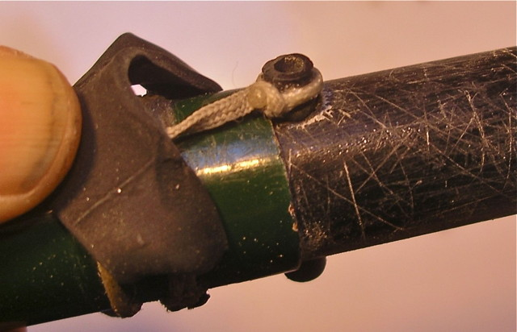
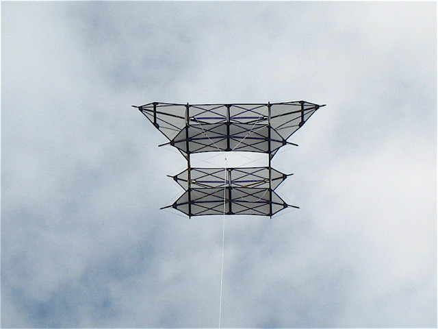

Utiliser des cannes à pêche
Les cannes à pêche pourraient être considérées comme un "moyen pauvre" vis-à-vis d'armatures en carbone, mais en réalité elles présentent plusieurs avantages :
- Elles sont beaucoup moins chères que le carbone, et existent en beaucoup de très grandes longueurs,
- Elles sont rigides à la base et souples au bout, ce qui est intéressant pour certaines armatures (comme mes oiseaux ou des bannières), avec, si vous aimez cela, des formes de cerfs-volants plus souples, plus "bio" grâce à leur courbure progressive,
- On peut se les procurer sans délais dans la plupart des Hypers ou magasins sportifs DecaGo...,
- On peut les utiliser pour des longerons très longs sans être obligé de faire des raccords, le plus souvent délicats à fabriquer, et plus ou moins fragiles (si on fait un raccord assez solide, la barre casse au ras du raccord !),
- Les cannes, à cause de leur gros diamètre et de la finesse de leur paroi, sont nettement plus rigides que les tubes de carbone, c'est-à-dire se courbent moins pour la même masse de matière. Par exemple, un Albatros comme le mien, réalisé en tubes de carbone, a volé avec les ailes comme la statue "Spirit of Ecstasy" qui orne la calandre des Rolls-Royce et a dû être repris... en cannes !
Mais elles présentent aussi des inconvénients :
- Elles cassent plus facilement en cas de chute, en particulier sur la pointe de l'aile (ou quand quelqu'un marche dessus, ce qui arrive !)
- Elles peuvent se rétracter en vol, et ça vole beaucoup moins bien !
- Leur utilisation dans le sable humide est délicate : le sable qui se colle bloque le déploiement complet... qui ne se débloquera qu'en vol quand le sable partira, avec une rétractation à la clé ! Et si vous rangez avec du sable mouillé, n'espérez pas que l'intérieur de la canne sèchera, même d'un mois sur l'autre ! De plus, quand on étire les cannes, le sable agit comme un abrasif, diminue le diamètre du bout intérieur et augmente celui du bout extérieur : la canne s'allonge de plus en plus, voire peut sortir complètement !
Usage et pratiques
Exemple d'utilisation, d'abord, mon Albatros de 6 m d'envergure : 2 cannes de 4 m, scions enlevés :

Bouchons de rangement
Pour les petites cannes (3 m), le gros bout est coiffé d'un bouchon en caoutchouc. Malheureusement, dès que vous secouez la canne, les morceaux internes tapent sur le bouchon et l'éjectent !
Remède : entourer le bouchon caoutchouc d'un noeud coulant, puis d'une ou 2 demi-clés, bien serrer et encoller le tout. Le serrage créera un frottement suffisant pour empêcher une ouverture intempestive.

Petit bout : il possède en général un bouchon interne qui ne tient pas trop non plus.
Remède : prendre une bande de caoutchouc taillée dans une chambre à air. La mettre à cheval sur le bout en la tendant une peu et ficeler serré à 2 cm du bout. Encoller. Pour ouvrir, décaler la bande de caoutchouc, que vous ne perdrez jamais, et qui passe dans les fourreaux si vous ne les avez pas trop serrés.


Usure par le sable
D'abord, au montage ou au démontage, ne posez pas vos cannes dans le sable, il en rentre toujours !
Ensuite, au montage, essayez de sortir suffisamment de sable en faisant coulisser et tourner plusieurs fois la canne interne sans forcer le blocage. Le sable sort mieux par le gros bout, mais ne le laissez pas dedans, il reviendrait vous gêner. Si le frottement a fini par diminuer le diamètre de la canne interne, vous pouvez rattraper en l'enduisant de cyano rapidement lissée au doigt jusqu'au séchage, c'est très rapide. Vous aurez de la colle sur le doigt ? Ben, oui, mais ça part assez vite : enlevez le plus gros, s'il vous gène, après séchage dur, avec un abrasif le plus gros possible qui ne mord pas la peau. Le reste pèle tout seul dans la journée, ne vous en occupez pas. Si vous êtes délicat, collez-vous un bout de sparadrap sur le doigt avant !
Cannes qui se rentrent en vol
On peut tout d'abord utiliser des cannes "inversées" dont le petit tronçon se bloque à l'extérieur du gros. Elles sont plus chères et le rangement en est plus complexe. De plus, souvent, seuls les gros tronçons sont "inversés" et le problème subsiste pour les petits...
Pour les cannes "normales", le coulissement accidentel survient en général dans les périodes de fort vent turbulent où les ailes ou les bannières subissent des mouvements de torsion alternés qui finissent par débloquer l'emmanchement.
A titre de précaution préalable, vous pouvez dépolir le vernis dur à l'endroit de l'emmanchement.
Ensuite, n'ayez pas peur de bien verrouiller les cannes en forçant, j'ai toujours pu les démonter, depuis 15 ans que je m'en sers !
Pour les plus grosses, les plus souvent touchées, j'ai utilisé... une goupille transversale dans le bout interne, en renforçant l'endroit du trou par doublage : un tronçon de canne forcé à l'intérieur et collé. Attention de ne pas abîmer voire fendre la canne à la fin du perçage. Je recommande le perçage à la pointe de ciseau qui permet en tournant d'arriver progressivement au diamètre voulu sans forcer.
Remarque : On pourrait aussi mettre la goupille sur le plus gros bout (externe), avec un doublage extérieur, je n'ai pas encore essayé. Inutile de toute façon de traverser les deux cannes ce qui compliquerait le montage où il faudrait aligner les trous...

Remarque : en rabattant le caoutchouc par-dessus la goupille, vous l'empêcherez de sortir...
Reamrque bis : Cette méthode permet d'assurer que la canne, même usée, aura toujours la même longueur, ce qui facilite la réalisation à chaque fois d'une bonne symétrie.
Certains bloquent à chaque montage les cannes avec du ruban adhésif, ce qui est bien long... à faire et à défaire, et pas très sûr, les propriétaires de bannières en savent quelque chose...
Création de longerons
On peut créer de jolis longerons en assemblant tête-bêche 2 cannes par le gros bout via un morceau de bois du bon diamètre. Ca fait un joli ensemble effilé aux 2 bouts qui peut-être utilisé par exemple comme Eric Stempell pour les barres d'un Saconney qui n'en souffre vraiment pas :

Raccord central
Pas question de rentrer 2 cannes dans un raccord du commerce. D'abord le bouchon externe collé ne le permet pas. Une solution, seulement si le raccord doit être droit, est de mettre un bout de manche à balai entré à moitié dans chacune. Un tel raccord est soumis à la fragilité habituelle à ce type : j'ai explosé mon Condor comme ça un jour de vent fort, à Berck.
Voyez ici la solution que je recommande : Le raccord central. Le principe est de mettre un raccord souple complété d'une barre supérieure tenue au milieu par une ficelle et s'appuyant aux deux bouts sur les cannes. Ceci permet tous les réglages et tous les angles de dièdre ou de flèche, sans fabrication complexe, sans achat et attente de matériaux.
Conclusion
Faites un essai, des essais même, avant de rejeter a priori l'utilisation de cannes, cette solution rapide et efficace.